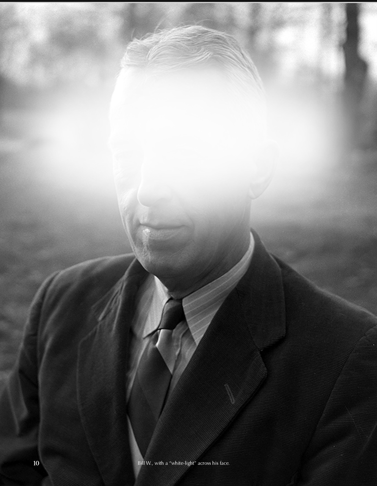
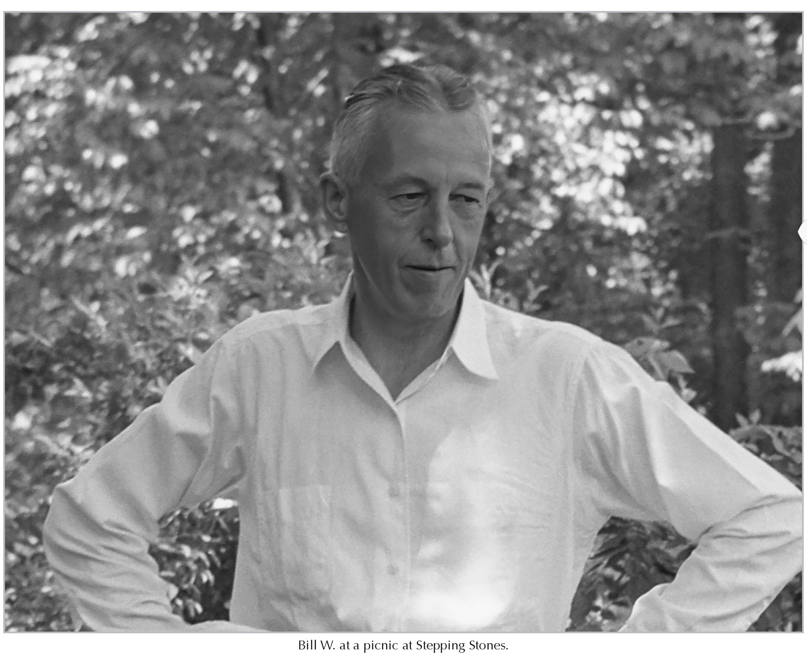
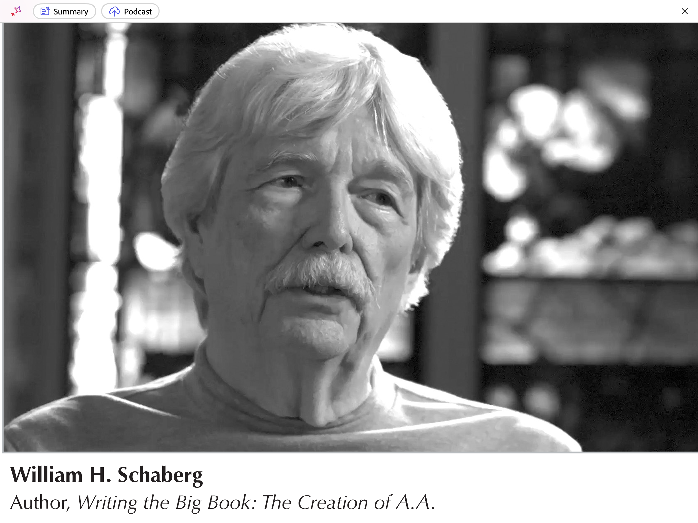
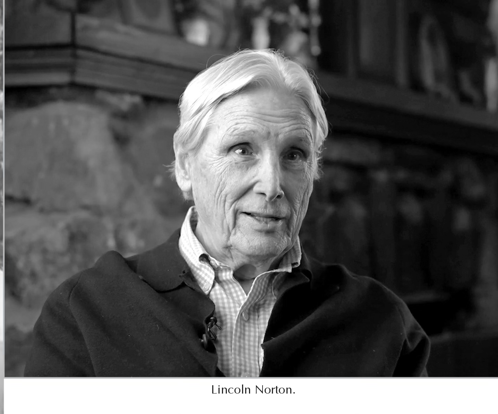
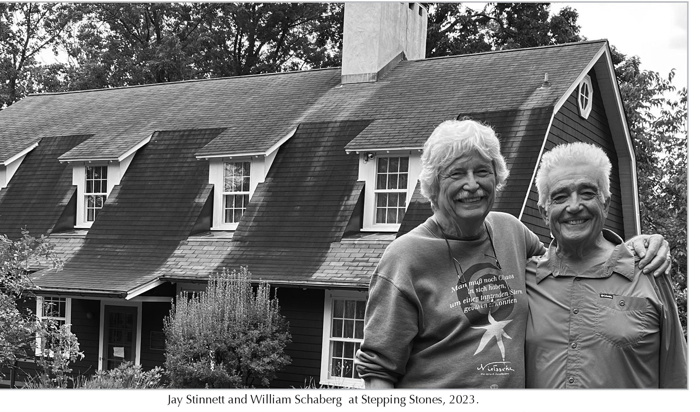
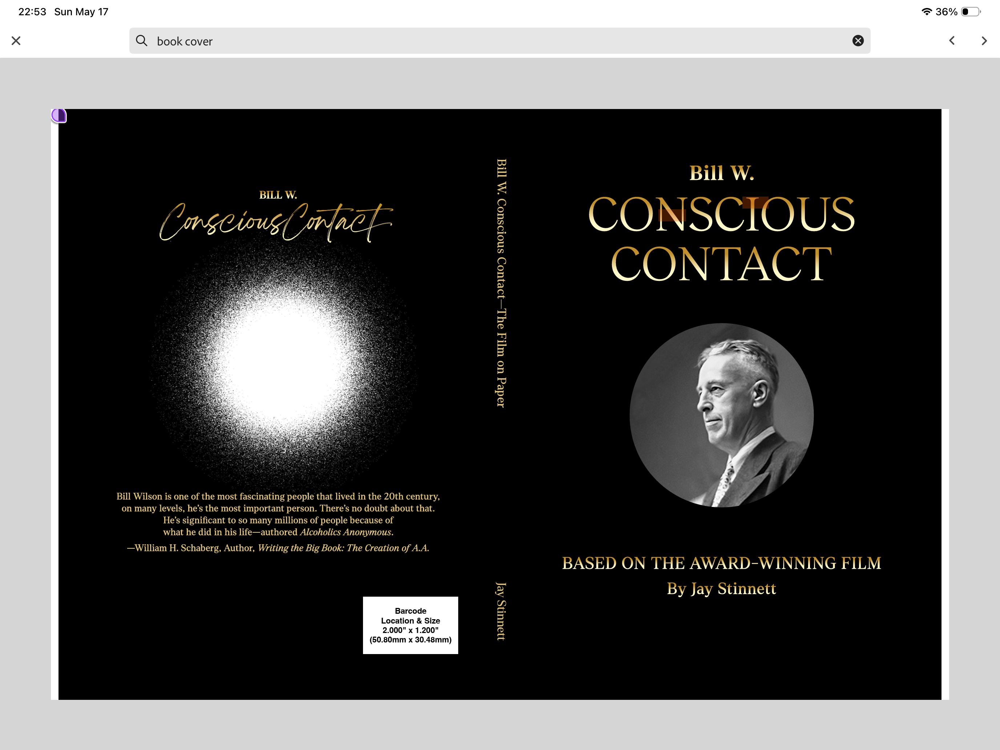

May 25, 2026
Pre-Publication Author’s Copies Available Ahead of June 23rd Release
Producer and Historian of AA Reveals New Discovery About the Founder of Alcoholics Anonymous

SEDONA, Arizona — For ninety years, members of Alcoholics Anonymous have quietly felt that the Twelve Steps were divinely inspired. Now, in his own words, the author confirms it.
Bill W. Conscious Contact — the award-winning documentary produced by Jay Stinnett and directed by Kevin Hanlon — is now available as a companion book published by Muse Bookings LLC. The official publication date is June 23, 2026. Pre-publication author’s copies are available now exclusively at BillWConsciousContact.com.
The book and film center on a discovery that reframes understanding of one of the most influential figures of the twentieth century. Bill Wilson — founder of Alcoholics Anonymous, whose Twelve Steps continue to this day to save so many lives — said that he did not write the Eleventh Step. It came to him as an inspiration.

“Bill Wilson is one of the most fascinating people who ever lived in the twentieth century — and the most important. He is significant to so many millions of people because of what he did in his life.”
— William H. Schaberg, Author, Writing the Big Book: The Creation of AA

William H. Schaberg — whose landmark work Writing the Big Book: The Creation of AA has sold more than 20,000 copies and stands as the definitive scholarly account of AA’s founding document — is a primary featured voice in the film, appearing in more than twenty minutes of conversation with producer Jay Stinnett. Together they explore the two great mysteries that drove Wilson’s lifelong spiritual search: the white light experience of December 1934 that ended his drinking and launched the movement that would become Alcoholics Anonymous, and his lifelong attempt to comprehend how that experience had moved through him to produce the Twelve Steps.
Joining Schaberg as a primary featured voice is Lincoln Norton, the man who personally taught Bill Wilson Transcendental Meditation in December 1969 — confirmed through Lois Wilson’s personal guest book discovered by Sharon Wolff, Certified Archivist at The Stepping Stones Foundation. Norton recounts Wilson’s response after his very first meditation session — and the words Wilson spoke about the Eleventh Step that he had written more than thirty years earlier.
The documentary draws on rare archival letters, recordings, and photographs — many never before seen publicly — from the collection at Stepping Stones, the historic home Bill and Lois Wilson shared for the last three decades of their lives. Sally A. Corbett-Turco, Executive Director of The Stepping Stones Foundation, appears throughout the film, guiding viewers through the archive and Wilson’s writing studio. The film is a joint venture with The Stepping Stones Foundation®.

Bill W. Conscious Contact has won Best Documentary honors at more than eight international film festivals, including the Royal Starr Film Festival, ARFF Amsterdam, Cannes Indie International, the Impact DOCS Awards, San Diego Movie Awards, Touchstone Independent Film Festival, Documentaries Without Borders International Film Festival, and the New York Feedback Film & Screenplay Festival.

| Edition | Price | Details |
|---|---|---|
| Softcover Edition | $39.95 | Available now at BillWConsciousContact.com ahead of the official June 23, 2026 publication date. Available on Amazon and through major booksellers from June 23rd. |
| Legacy First Edition | $149.95 | Signed and numbered by producer Jay Stinnett. Limited to 250 copies worldwide. Not available through any retail channel. Ships from Sedona, Arizona. |
Bill W. Conscious Contact is directed by Kevin Hanlon and produced by Jay Stinnett. It is a joint venture with The Stepping Stones Foundation® — the historic home of Bill and Lois Wilson in Katonah, New York, a 501(c)(3) organization dedicated to preserving and sharing the Wilson legacy. The Foundation’s archive contains more than 100,000 documents.
Bill W. Conscious Contact — The Award-Winning Film On Paper is published by Muse Bookings LLC. ISBN 9798255295043. Official publication date June 23, 2026. Pre-publication author’s copies available now at BillWConsciousContact.com.
For review copies, interview requests, or additional information:
Jay Stinnett • info@BillWConsciousContact.com • +1-310-874-2341
Jay Stinnett, Producer
info@BillWConsciousContact.com
+1-310-874-2341
BillWConsciousContact.com